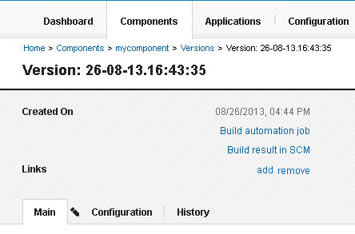

If IBM DevOps Deploy (Deploy) does
not have a source configuration type for your external tool, you can use the
udclient command-line client to manage components.
About this task
When you use the udclient client in this way, you can push new versions
of components to the server, start processes, add links to external sources, and run many other
tasks on the Deploy server as part of your build or SCM publishing process. In this way, you can work with your
components in Deploy without changing your current technology.
Procedure
Follow these general steps to set up a component that
uses the command-line client:
-
Create one or more components in Deploy to
represent the components of your build. Use the following parameters in the Create
Component window:
- In the Source Configuration Type field, select
None.
- Clear the Import Versions Automatically check box.
- Complete the rest of the fields in the window as usual.
You can also use the udclient client to create components, but because
component creation is a one-time process, components are typically created withe the Web UI.
-
In the scripts for your component, add code that calls udclient client
commands to create a component version and upload the artifacts to the Deploy server.
In most cases, you use several different commands to create the version. The following steps
show examples of some of the commands you might use.
Note: These examples use code in an Apache Ant
build file. Specifically, they call the udclient client with the Ant
<exec> command, which calls external programs. If you are using a different
build or SCM technology, you can adapt the examples to your specific technology to call the
udclient client.
-
Use the createVersion command to create the new version.
The following example code creates a version of a component that is named
mycomponent. The version name is set to the timestamp of the
build. The variables
${udclient.weburl},
${udclient.username}, and
${udclient.password} represent the URL of the server and the user name and password
for the
server.
<exec executable="/bin/bash"
outputproperty="mycomponent.component.output">
<arg value="/opt/udclient/udclient"/>
<arg value="-weburl"/>
<arg value="${udclient.weburl}"/>
<arg value="-username"/>
<arg value="${udclient.username}"/>
<arg value="-password"/>
<arg value="${udclient.password}"/>
<arg value="createVersion"/>
<arg value="-component"/>
<arg value="mycomponent"/>
<arg value="-name"/>
<arg value="${buildTimestamp}"/>
</exec>
-
Use the addVersionFiles command to upload the artifacts to the component version.
The following example code uploads the files in the
${destdir} folder to
the
version:
<exec executable="/bin/bash">
<arg value="/opt/udclient/udclient"/>
<arg value="-weburl"/>
<arg value="${udclient.weburl}"/>
<arg value="-username"/>
<arg value="${udclient.username}"/>
<arg value="-password"/>
<arg value="${udclient.password}"/>
<arg value="addVersionFiles"/>
<arg value="-component"/>
<arg value="mycomponent"/>
<arg value="-version"/>
<arg value="${buildTimestamp}"/>
<arg value="-base"/>
<arg value="${destdir}"/>
</exec>
- Optional:
Add links from the component version.
With the
addVersionLink command, you can add links from the version to external build resources, such as the
page that shows information about the build result. These links appear at the top of the information
page for the component version. The following figure shows a component version with a link to the
related build job and the related build result in the source-code management system:

For example, the following code adds a link to the build result page at the URL
http://build.example.com/projects/mycomponent/${buildResultUUID}:
<exec executable="/bin/bash">
<arg value="/opt/udclient/udclient"/>
<arg value="-weburl"/>
<arg value="${udclient.weburl}"/>
<arg value="-username"/>
<arg value="${udclient.username}"/>
<arg value="-password"/>
<arg value="${udclient.password}"/>
<arg value="addVersionLink"/>
<arg value="-component"/>
<arg value="mycomponent"/>
<arg value="-version"/>
<arg value="${buildTimestamp}"/>
<arg value="-linkName"/>
<arg value="External build result"/>
<arg value="-link"/>
<arg value="http://build.example.com/projects/mycomponent/${buildResultUUID}"/>
</exec>
Results
Now, when you run a build in your external build tool, the
build process creates a component version and uploads the artifacts
for the version to the Deploy server.
From this point, you can work with the component and version on the
server as usual, such as running processes with it. You can also
add other commands to your build script. For example, you can start
application processes with the requestApplicationProcess command.